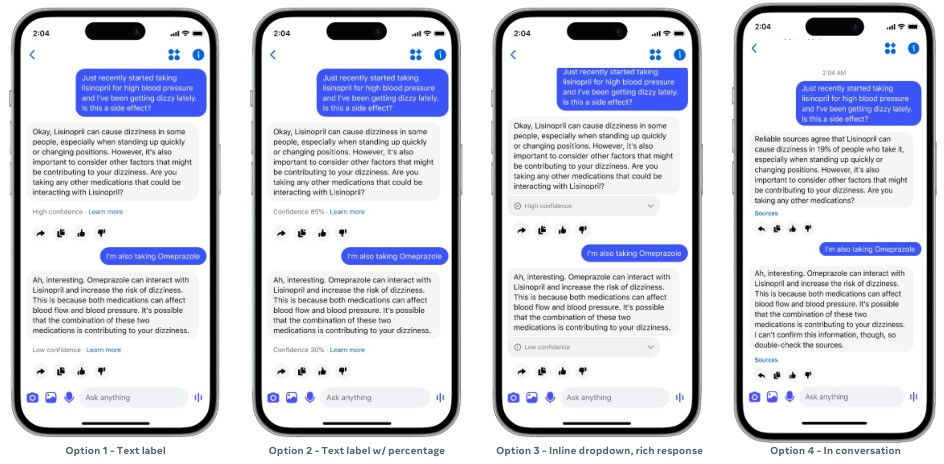

同一个答案，下面换一种提示
研究针对一个具体设计选择：聊天回答下方到底应显示信心、来源，还是两者组合。作者先做八人访谈和一千人调查，再比较六种手机界面：没有提示、高低信心标签、信心百分比、更醒目的信心气泡、来源图标，以及来源配合信心措辞。实验中的百分比分别设为百分之八十五和百分之三十，是受控材料，不是从运行中模型校准得到的可靠性。界面让人先看到答案，再根据提示决定怎么看待它；这里评估的是表达方式怎样影响判断，而不是发布了能够自动核实事实的新聊天产品。
Chatbot Factuality Indicators · 论文 · 交互研究

研究针对一个具体设计选择：聊天回答下方到底应显示信心、来源，还是两者组合。作者先做八人访谈和一千人调查，再比较六种手机界面：没有提示、高低信心标签、信心百分比、更醒目的信心气泡、来源图标，以及来源配合信心措辞。实验中的百分比分别设为百分之八十五和百分之三十，是受控材料，不是从运行中模型校准得到的可靠性。界面让人先看到答案，再根据提示决定怎么看待它；这里评估的是表达方式怎样影响判断，而不是发布了能够自动核实事实的新聊天产品。
实验纳入五千一百五十一名至少每月使用生成式AI的美国成年人，来自YouGov在线样本。每人随机看到一个主题、一种提示和一个正确或错误的回答；主题分别是园艺、数学与医疗。参与者必须查看手机截图至少三十秒，再评价准确性、信息是否足够、信任和总体印象。下一屏明确告诉他们答案是否正确，随后再次评分。数据采集于二〇二五年六月，论文是本次新公告的研究披露，不是本周才完成的用户测试。这样安排能分开第一眼印象与知道事实后的反应，却没有模拟来回追问、打开来源或实际使用建议的完整任务。
带高信心的回答被认为更准确，部分信心标签和来源标签也获得较高的初始信任或印象；论文同时强调，提示类型的效应较小，许多比较与完全没有提示的控制条件并无显著差异。正确性揭晓后，提示样式对信任与总体印象的差异消失，回答究竟正确与否影响更大。尤其是高信心却答错的情况，会带来更明显的信任损失。医疗主题总体引起更多怀疑，不能把低风险园艺问答里的提示效果直接推到高风险场景。这里没有证据支持把某个图标当作通用最优方案，也没有证明百分比能改善用户真正识别错误的能力。
访谈里，同一个信心词会被理解为答案正确的概率、来源彼此一致，甚至系统已经检查过。这些解释对应不同保证，界面若不说明含义，就可能让人省略本来需要的核对。受访者希望能看到相关原文、展开式来源信息与局部不确定内容；作者将这些列为设计方向，而非本实验已经证实的改进。所有样本都在美国且已有AI使用经验，访谈参与者较年轻，实验只给一次静态截图，没有行为测量或后续决定。产品判断因此应落在可解释、可追溯的证据呈现上：降低核对步骤值得测试，但本研究尚未量化它能增加多少来源点击或减少多少误用。